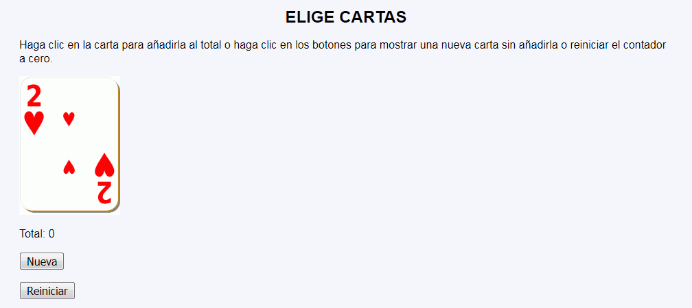
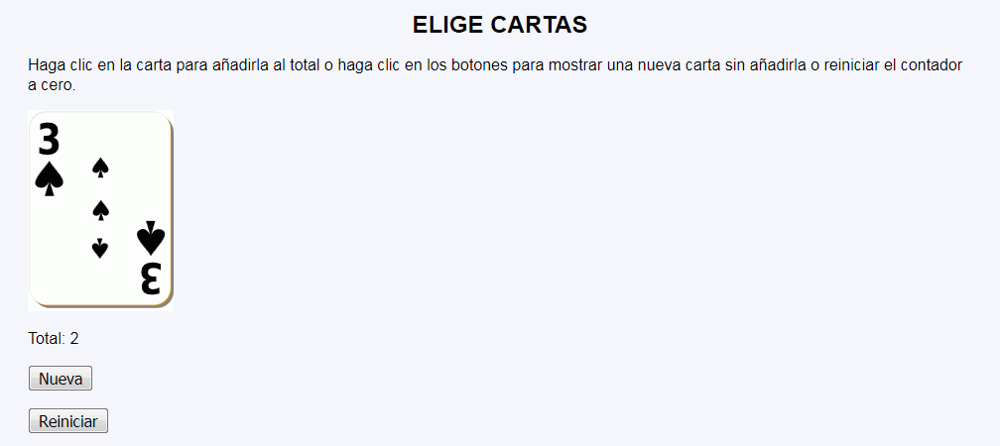

Elige cartas - Ejemplo de programa
Nota: El día del examen los alumnos no tienen acceso a este ejemplo, solamente tienen acceso a las capturas del apartado anterior.
Un ejemplo de programa puede probarse en la ventana siguiente:
En este ejercicio se debe crear un programa que simule la elección de cartas de un mazo. Cada vez que se haga clic en la carta, aumentará el contador total y unos botones permitirán cambiar la carta o poner a cero el contador.


<form action="elige-cartas-2.php">
<p>
<button name="carta" value="3">
<img src="img/p3.svg" alt="p3" height="200">
</button>
</p>
<p>Total: 2</p>
<p><input type="submit" name="accion" value="Nueva"></p>
<p><input type="submit" name="accion" value="Reiniciar"></p>
</form>
Nota: El día del examen los alumnos no tienen acceso a este ejemplo, solamente tienen acceso a las capturas del apartado anterior.
Un ejemplo de programa puede probarse en la ventana siguiente: